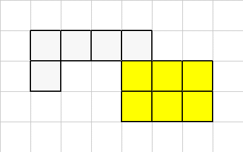
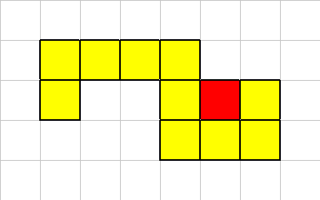
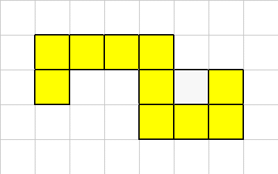
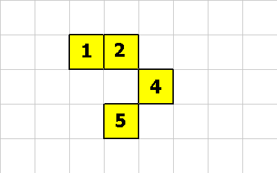
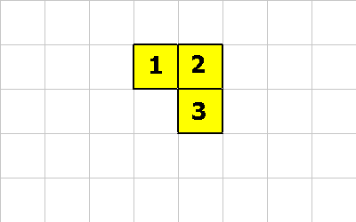
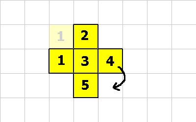
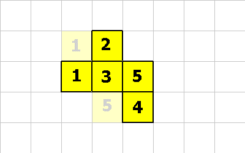
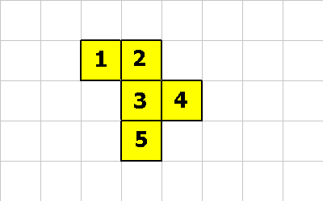
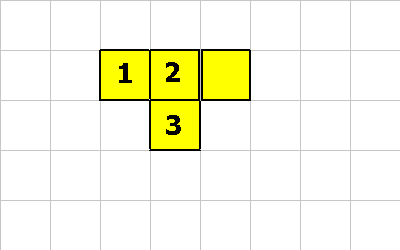
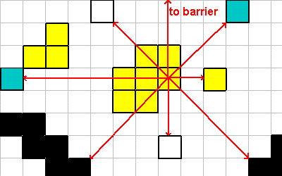

VOLVE 4.0
VOLVE 4.0
Organisms and Cells
This page will discusss the mechanics of how cells and organism interact with the universe.Table of Contents:
- Direction Vectors
- Normalized Vectors
- Organism Connectivity
- Energy
- Instruction: OMOVE
- Instruction: ROTATE
- Instruction: CMOVE
- Instruction: GROW
- Instruction: MAKE-SPORE
- Instruction: EAT
- Instruction: LOOK
- Instruction: WHAT
- Instruction: WHERE
- Instruction: NEAREST
- Instruction: FARTHEST
- Instruction: NEAREST2
- Instruction: FARTHEST2
- Organism Instruction Reference
- Communicating Between Cells
Directions
Many of the instructions that cells execute require a vector. This vector is used to indicate a direction, or an adjacent square that the organism or cell will interact with. This diagram shows (x, y) coordinates for the eight directions surrounding a cell:
All operations that interact with the universe using (x, y) coordinates will specify coordinates like these.
Normalized Vectors
Most operations are restricted to the adjacent squares Therefore, Evolve normalizes all coordinates to values of -1, 0, +1.
- values less than 0 (< 0) => map to -1.
- values equal to 0 (= 0) => map to 0.
- values more than 0 (> 0) => map to 1.
For example,
-30 4 OMOVE ; move organism using vector (-1, 1) 0 -4 CMOVE ; move cell using vector (0, -1) 9 29 5 MAKE-SPORE ; make spore using vector (1, 1) (with energy 5)
Organism Connectivity
Organisms consists of one or more cells. To ensure the shape of an organism remains coherent (i.e, sane) Evolve will enforce certain connectivity constraints.Consider this organism,

One of its corner cells has been killed,

Our connectivity constraints are such that a multi-cellular organism must always have at least one neighbor in the up, down, left or right location. A diagonal neighbor is not sufficient.
Therefore in this example, after the dead cell is removed, we have to make the organism properly connected. We do this by killing off one of the regions.
To resolve this problem, we analyse the organism and kill off the smallest regions. Keeping just the largest section. In the event of a "tie" we just choose the first region that our traversal algorithm considered.

The "L" shaped region had the smaller number of cells, so it was killed off. This is how "organic material" gets created. It is left over material from such interactions. Each white square has a fraction of the original organisms energy amount.
Let's look at another example:

In this case the death of this cell does not break the organism into multiple sections. So in this case we just kill of the cell in question.

The following are examples of bogus organisms:

This is bogus because cell 2 doesn't connect to cell 4. And cell 4 doesn't connect to cell 5.

This organism is bogus because cell 1 doesn't connect to cell 3. The rest of the organism is okay though.
Energy
Energy is an attribute of each organism. The total amount of energy in a simulation is equal to the amount of energy that the first organism(s) had when the simulation was created. The total energy never changes during a simulation (conservation of energy).Every organism must maintain at least one unit of energy just to be considered "alive". If some operation causes this value to go to zero, the organism is dead.
Why Energy?
The purpose of energy is to introduce a limit on stack growth. Without it, a mutated organism could just fill up its call stack (or data stack) with junk values and not care about being stack friendly.I like to think of "energy" as the 3rd dimension of the simulation. When you specify the universe you give it a width and height. Energy is like the depth of the sim. If you were to view the universe in three dimensions then energy would be the depth component. It would form a bumpy surface. Some grids would contains lots of energy and some grids would contains none (empty squares). But the maximum depth would remain constant (whatever the starting energy was).
No Cost Stack
Each cell gets fifty "no cost" stack elements. These 50 free stack element are shared between the data and call stacks. Once a cell increases its total stack usage past 50, then it will require one unit of energy for each new stack element. This energy is withdrawn from the organisms 'energy' account. If a cell tries to use additional stack space and the organism does not have enough energy, then that cell is flagged as DEAD.When a cell dies in this fashion, it is removed from the organism (and connectivity checks are performed) and all stack elements past the 50th element, are converted back int energy and returned to the organisms energy account.
Example
For example, assume the cell is using 55 stack elements (25 data and 30 call stack elements). Assume the organism has the minimum of 1 unit of energy. Now the cell tries to push "-3" on its data stack. This causes the organisms energy account to reach "0", which is not allowed (organisms must maintain a minimum of 1 unit of energy). The cell that causes the organisms energy to dip below 1, will be killed off.As a result of the cells attempt to push "-3" on the stack, the cell is killed and the extra stack elements are converted to energy and returned to the organism. In this case, 5 units of energy are added back to the organism (55 - 50 = 5).
So after this cell is killed the organism will have a total energy of 6. (1 + 5 = 6).
Energy and Organic Material
When a cell is killed by being eaten, the connectivity algorithm must analyse the organism and kill of all but the largest region. Each cell in a region that is killed off will be converted to organic material. The amount of energy that this organic material will contain is equal to 1/n th the amount of energy in the organism (where n is the number of cells in the organism) plus any stack elements beyond 10.For example, a cell, that is using 53 stack elements, happens to be in a region that is to be killed off. The organism (which consists of 20 cells) has 100 units of energy. If this cell gets converted to organic material then it will be given: 3 + 100 * 1/20 units of energy. Or 8.
Energy and Spores
A spore gets created with an energy amount (specified by the MAKE-SPORE instruction). If a spore gets eaten then this energy amount is transferred to the organism that ate it. If a spore is fertilized, then the new organism gets created with the sum of energy from the first and second MAKE-SPORE instructions.
Energy and Other Operations
Energy is not needed to move, look, eat, etc.... Energy is only needed to increase a cells stack usage beyond fifty (also each organism needs at least one unit of energy to be considered alive).Use energy to control the overall population of your simulation:
- 10,000 units of energy equals about 1,000 organisms.
- 40,000 units of energy equals about 4,000 - 6,000 organisms.
- 50,000 units of energy equals about 8,000 - 10,000 organisms.
Of course the other factor in population is the width x height of the universe. A bigger universe will give more room for more organisms.
OMOVE
The OMOVE instruction causes the entire organism to move in one of the 8 directions.
Assume that cell 2 has executed the instruction 1 0 OMOVE. The vector (1,0) means move right 1 square.

Or assume that cell 1 has executed the instruction -1 1 OMOVE. The vector (-1, 1) means move left and down diagonally.

The OMOVE instruction first checks that all squares that organism will move to, are vacant.
ROTATE
The ROTATE instruction causes the organism to be rotated. Because of the grid layout and the constraints on the shape of organisms, this instruction only rotates in 90 degree units. Rotate takes a single integer off of the data stack. This value represents 90 degree rotations.Consider this organism, the cell with the dot will execute a ROTATE instruction.

Here's what the organism looks like after a -1 ROTATE:

Here's what the organism looks like after a 1 ROTATE (from starting figure):

This instruction requires that all grid locations that the rotated organism is to be moved are vacant.
CMOVE
CMOVE is a cool instruction. It allows a cell to move relative to the organism. The following pictures will demonstrate an organism morphing from one shape to another. The following instructions will be executed:0 1 CMOVE ; cell 1 executes this instruction 0 1 CMOVE ; then cell 4 executes this instruction 1 -1 CMOVE ; then cell 5 executes this instruction

0 1 CMOVE ; <--- cell 1 executes this

0 1 CMOVE ; <--- cell 4 executes this

1 -1 CMOVE ; <--- cell 5 executes this
Notice that cell 5 moved diagonally! This is perfectly fine, as long as the organism is properly connected after the move.

This last pictures shows what the creature looks like after these 3 CMOVE instructions.
GROW
The GROW instruction is how an organism (which always starts out life as a single cell) becoms multi-cellular.
Let's assume this is our organism:

To get to the state shown below several possibilities exist:
1 1 GROW ; executed by cell 2 or, 1 0 GROW ; executed by cell 3

Another GROW operation produces the organism below. What are the possible operations that could create the organism? Here are the only possibilities:
0 1 GROW ; executed by cell 3 or, -1 1 GROW ; executed by cell 4

As shown above, the GROW operation creates a new cell. The new cell recieves the execution context of the cell that executed the GROW instruction. The only difference is the new cell has a -1 on top of its data stack and the other cell has a 1.
Grow is very much like the fork() system call on Unix. Fork creates a new process. But fork does it by cloning the current process. The only way for a programmer to know which execution context they are in is by examining the return value of fork(). The same applies to the GROW instruction.
Grow also allows a creature to increase its processing power. An organism consisting of two cells has twice the processing power of a single celled creature. Such an organism can do twice the computations in the same amount of steps as a single celled creature. This is profound capability and any creature that makes the leap into multi-cellularism has a lot going for it.
Example KFORTH code using GROW,
main:
{
1 0 GROW -1 = LeafCell if
brain call
}
LeafCell:
{
1 0 EAT pop
-1 -1 EAT pop
1 ?loop
}
brain:
{
; ... creature brain goes here ...
}
|
In this example a new cell is grown at coordinates (1, 0), and the new cell begins its life executing inside of the code block 'LeafCell'. The LeafCell just eat's forever. The parent cell continues to call the 'brain' routine to do the normal creature processing.
You can write your routine to encapsulate this common logic as follows:
main:
{
1 0 LeafCell myGROW call
brain call
}
LeafCell:
{
; .... leaf cell stuff here ...
}
brain:
{
; ... brain cell stuff here ...
}
;
; (x y cb -- )
;
; Grow and call 'cb' for the new cell
;
myGROW:
{
-rot GROW -1 = { pop } ifelse
}
|
This mechanism allows both sexual and asexual reproduction. (see spores for more information). The following example shows an organism reproducing asexually:
So our happy organism wants to have a baby. Either cell 2 executes this instruction:
Or cell 3 executes this one:
In either case this is what the universe now looks like:
Now lets assume one of the following instructions gets executed:

A new organism is born! Whooo hoo. The new organism will start out life
with a modest 32 units of energy (20 + 12).
The new organism will inherit the genetic program of the parent organism
(of course it may have slight mutations).
Sexual reproduction occurs when two different organisms contribute a spore. In
this case the genetic program from both parents is interlaced (this process is
described elsewhere).
All organisms belong to a certain strain (by default strain 0). Strains allow you to
tag a lineage of organisms from the first one to an evolved population. Therefore, SPORE's
cannot be fertilized if the two organisms belong to different strains.
The first MAKE-SPORE operation must have an energy amount that is greather than 0. But the
second MAKE-SPORE instruction can fertilize an existing spore using 0 energy.
In this example cell 2, executes the 1 1 EAT instruction.
After the instruction the white square (organic material) has
been removed.
Not shown is what happens when a cell tries to eat another living cell. In this
case the cell being eaten is flagged as dead (it will show up RED). The organism
which has dead cells will have to resolve that issue later in the simulation.
To eat the spore located at (0, 1) this instruction could be used: 0 1 EAT.

This figure shows all 8 direction vectors from a single cell.
The LOOK instruction would return the following for this cell:
Vision using LOOK (and the other vision instructions) will look through the organism itself. This
makes the vision instructions less evolutionary brittle, as an "eye" cell can evolve inside the middle
of a multi-cellular organism.
The 'what' values are powers of 2, which allows them to be OR'd together for form a search mask
(see NEAREST and FARTHEST).
A LOOK operation using the vector (0, 0) returns a what=0, where=0.
"What" values are assigned according to this key:
WHAT returns the type of thing seen along a direction vector.
It is a shorthand for these instructions:
This instruction takes a bit-mask which is an OR'ing of 'what' values. Only these types of
things will be used when determining the nearest direction.
For example, a mask value of 5 (binary 0101), matches Cells and Organics (but not spores or barriers).
So this code,
Would return vector (1, 0) because that direction has a "cell" at distance 2 (which is the
smallest distance that matches the bit-mask).
NOTE: If more than one direction "tie" for seeing the nearest (or farthest)
thing, then instructions NEAREST, FARTHEST, NEAREST2, FARTHEST2 will resolve the tie by
choosing one of the matches randomly.
This instruction takes a bit-mask which is an OR'ing of 'what' values. Only these types of
things will be used when determining the farthest direction.
For example, a mask value of 2 (binary 0010), matches only spores (but nothing else).
So this code,
Would return vector (-1, 0) because that direction has a "spore" at distance 7 (which is the
largest distance to any spore).
This instruction takes a bit-mask which is an OR'ing of 'what' values. Only these types of
things will be used when determining the nearest direction. It also takes a distance value
which limits the search radius.
For example, a mask value of 8 (binary 1000), matches Barriers (but nothing else).
So this code,
Would return vector (0, 0) because there are no barriers within the search distance of '3'.
This instruction takes a bit-mask which is an OR'ing of 'what' values. Only these types of
things will be used when determining the farthest direction. It also takes a distance value
which limits the search radius.
For example, a mask value of 2 (binary 0010), matches only spores (but nothing else).
So this code,
Would return vector (1, -1) because that direction has a "spore" at distance 3 (which is the
largest distance to any spore within our search radius of '3'). The other spore doesn't match
because it is outside our search radius.
Move entire organism by 1 square in the up, down, left, right, or diagonal direction.
RETURNS:
ENERGY: Does not require any energy.
Rotate the organism by 90 degree units around the cell that executes
this instruction.
RETURNS:
ENERGY: Does not require any energy.
Move the cell that executes this instruction relative to the organism.
RETURNS:
ENERGY: Does not require any energy.
Eat stuff at (x, y) from this cell. Return 'n' the amount of energy eaten.
RETURNS:
ENERGY: Will transfer energy from eaten items to this organism.
Create new spore (or fertilize and existing spore).
RETURNS:
ENERGY: Requires 'e' units of energy.
When a spore is fertilized, the original genetic program used to create the
spore, and the genetic program from the organism that fertilized the spore will be
first merged. Then the resulting genetic program is MUTATED. Then a new organism
is born. It will begin execution at the first instruction of code block 0 (main). It
will be given 'e' units of energy, which is the sum of the energy specified with
the first and second MAKE-SPORE instructions.
Add a new cell to this organism.
RETURNS:
ENERGY: Requires (c.data_stack_size + c.call_stack_size + 1) units of energy.
(where 'c' is the cell executing the GROW instruction). The "+ 1" is for
the return value that we will place on the new cells data stack.
Look along a normalized (x, y) direction vector. Return the thing it found, and the distance.
RETURNS:
ENERGY: Does not use energy.
WHAT returns the type of thing seen along a direction vector.
It is a shorthand for these instructions:
RETURNS:
ENERGY: Does not use energy.
WHERE returns the distance to something along a direction vector.
It is a shorthand for these instructions:
Looks in all 8 directions and return the (x, y) direction vector that corresponds
to the thing with the smallest distance (and matches a 'mask' value).
RETURNS:
ENERGY: Does not use energy.
Looks in all 8 directions and return the (x, y) direction vector that corresponds
to the thing with the largest distance (and matches a 'mask' value).
RETURNS:
ENERGY: Does not use energy.
Looks in all 8 directions and return the (x, y) direction vector that corresponds
to the thing with the smallest distance (and matches a 'mask' value and is within
the distance search radius).
RETURNS:
ENERGY: Does not use energy.
Looks in all 8 directions and return the (x, y) direction vector that corresponds
to the thing with the smallest distance (and matches a 'mask' value and is within
the distance search radius).
RETURNS:
ENERGY: Does not use energy.
Refer to this figure for the descriptions of the following instructions.
The mood register is something the cell sets, and others can look at. The message register
is something that others set, and this cell looks at.
Using the instructions pack2, pack4, unpack2, unpack4 many values can be combined into a
single 64-bit integer and stored in the MOOD and MESSAGE registers. For example, to send 4 integers to
another cell, this code could be used:
The reciving cell, can extract these 4 values like so:
Every cell has its own "MOOD" register. This instruction queries another cell
using an (x, y) vector. This vector is not normalized which allows the cell
to query any other cell within its own organism (not just adjacent cells). For example,
if cell 2 executed the following instructions:
If a bogus (x, y) is specified then 0 is pushed on the data stack. (0, 0) refers to the
cell executing the instruction.
ENERGY: Does not use energy.
The cell executing this instruction will set its own mood register. It is not possible
to set others. The purpose of the mood register is for a cell it advertise its "mood" to
other cells in the organism. For example, if cell 3 executed these instructions:
ENERGY: Does not use energy.
This instruction takes the value off of the top of the data stack and sets the message
register for every cell in our organism.
ENERGY: Does not use energy.
This instruction takes 3 arguments. An (x, y) vector and a value 'm'. The vector is NOT
normalized so that the cell can send a message 'm' to any other cell in the same organism
(not just adjacent cells). For example, if cell 1 exectuted this these two instructions:
ENERGY: Does not use energy.
The RECV instruction just pushes a copy of our message register on top of
the data stack.
ENERGY: Does not use energy.
Fetch the organisms "energy" field and place it on our data stack. Please be
aware that putting something on the data stack requires 1 unit of energy. So the
value placed on the data stack is BEFORE the simulator subtracts 1 unit of energy for
the data stack entry.
Also this instruction does not account for any energy that is stored in the form of stack
elements. (This is a good thing, because such energy is not really available to be used).
ENERGY: Does not use energy.
Fetch the organisms "age" field (which is the number of elapsed simulation step)
and push this value on our data stack.
ENERGY: Does not use energy.
MAKE-SPORE
The MAKE-SPORE instruction is how reproduction occurs. In order to reproduce
a spore must be created. But this isn't enough. Another spore must be
created on top of the first one.

1 0 20 MAKE-SPORE ; create spore with 20 units of energy
1 -1 20 MAKE-SPORE ; create spore with 20 units of energy

1 0 12 MAKE-SPORE ; cell 2 does this or....
1 -1 12 MAKE-SPORE ; cell 3 does this
EAT
Eating is how an organism survives. The EAT instruction must be called to eat
stuff that is touching the cell. The cell executing the EAT instruction
will attempt to eat anything at the (x, y) offset.


LOOK
The LOOK instruction takes a normalized (x, y) vector and looks along that
line until it finds something. The thing it finds (the 'what' value) and the distance
in which it was found it returned on the data stack.
0 -1 LOOK ; what = 8, where = 100
1 -1 LOOK ; what = 2, where = 3
1 0 LOOK ; what = 1, where = 2
1 1 LOOK ; what = 8, where = 4
0 1 LOOK ; what = 4, where = 3
-1 1 LOOK ; what = 8, where = 4
-1 0 LOOK ; what = 2, where = 7
-1 -1 LOOK ; what = 4, where = 3
0 0 LOOK ; what = 0, where = 0
WHAT
LOOK pop
WHERE
WHERE returns the distance to something along a direction vector.
It is a shorthand for these instructions:
LOOK swap pop
NEAREST
This instruction looks in all 8 directions surrounding a cell and returns the (x, y) vector that
has the smallest distance.
5 NEAREST ; returns (1, 0)
FARTHEST
This instruction looks in all 8 directions surrounding a cell and returns the (x, y) vector that
has the largest distance.
2 FARTHEST ; returns (-1, 0)
NEAREST2
This instruction looks in all 8 directions surrounding a cell and returns the (x, y) vector that
has the smallest distance.
8 3 NEAREST2 ; returns (0, 0)
FARTHEST2
This instruction looks in all 8 directions surrounding a cell and returns the (x, y) vector that
has the largest distance.
2 3 FARTHEST2 ; returns (1, -1)
ORGANISM INSTRUCTION REFERENCE
The core KFORTH instruction (like dup, pop, +, *, /, etc..) are covered
in the section entitled the KFORTH Language.
What follows is a detailed reference guide for the instructions that control organisms and cells:
Interacting with the universe:
Vision:
Communicating between cells:
Query information about ourselves:
OMOVE
Usage: ( x y -- r )
ROTATE
Usage: ( n -- r )
CMOVE
Usage: ( x y -- r )
EAT
Usage: ( x y -- n )
MAKE-SPORE
Usage: ( x y e -- r )
GROW
Usage: ( x y -- r )
LOOK
Usage: ( x y -- what where )
WHAT
Usage: ( x y -- what )
LOOK pop
WHERE
Usage: ( x y -- where )
LOOK swap pop
NEAREST
Usage: ( mask -- x y )
FARTHEST
Usage: ( mask -- x y )
NEAREST2
Usage: ( mask dist -- x y )
FARTHEST2
Usage: ( mask dist -- x y )
Communicating Between Cells

23 -999 5901 3 pack4 ; combined these 4 (16-bit intgers) into single 64-bit int.
-1 1 SEND ; send to cell
RECV
unpack4 ; the values 23, -999, 5901, 3 are now on the stack
MOOD
Usage: ( x y -- m )
0 0 MOOD ; returns -23
-1 0 MOOD ; returns 123
-1 1 MOOD ; returns 33
99 99 MOOD ; returns 0
MOOD!
Usage: ( m -- )
0 0 MOOD 1 + MOOD!
Then cell 3's mood would be increased by 1. So it would be set to 34.
BROADCAST
Usage: ( m -- )
SEND
Usage: ( m x y -- )
100 1 0 SEND ; set cell 2's message register to 100
-46812 0 1 SEND ; set cell 3's message register to -46812
0 0 0 SEND ; set out message register to 0.
12 -99 99 SEND ; does nothing because (-99, 99) is bogus
A SEND operation using bogus coordinates will be ignored.
RECV
Usage: ( -- m )
ENERGY
Usage: ( -- e )
AGE
Usage: ( -- a )